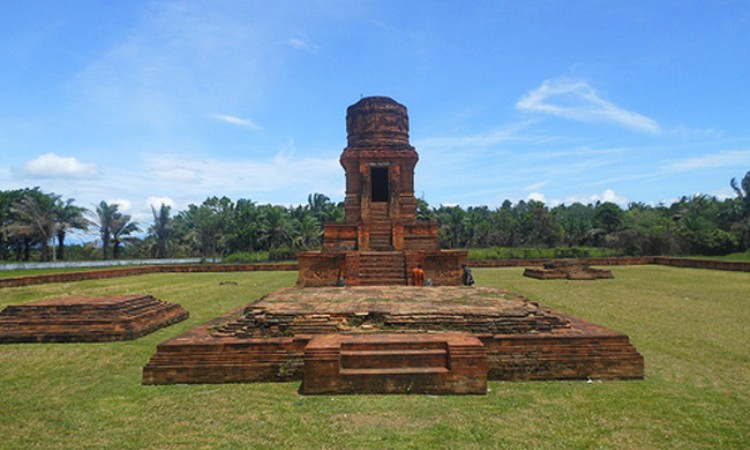
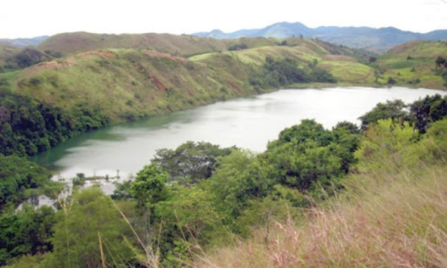

Kota Tebing Tinggi
Sebagai salah satu tempat bersejarah di Indonesia, dan menjadi kota tua di Padang, Tebing Tinggi memang memiliki sejumlah destinasi wisata yang menarik hati. Objek wisata alam maupun sejarah tersear ada di setiap sudut wilayah Tebing Tinggi. Sebagai tempat yang dahulunya pernah menjadi kerajaan di Padang, tempat ini menawarkan banyak eksotisme keindahan panorama alam yang siap memanjakan matamu.
Candi Bahal
Image Credit: Buddhazine.com
Bagi wisatawan yang ingin berlibur ke daerah sumatera utara tepatnya di Kab.Padang Lawas Utara,
Candi
Bahal adalah pilihan paling tepat. Nama lain dari Candi Bahal adalah Candi Portibi, disebut
demkian
karena Candi tersebut terletak di Kecamatan Portibi.
Candi Bahal terdiri dari III bangunan yang saling terpisah, yaitu Candi Bahal I, Candi Bahal II,
dan
Candi Bahal III.
Bangunan Candi Bahal sendiri sangat berbeda dari bangunan candi pada
umumnya, itu
karena Candi ini bangunannya berupa
susunan bata. Candi yang diperkirakan sudah ada sejak abad ke-11 M dan merupakan bukti
peninggalan
sejarah dari
sisa-sisa kejayaan kerajaan Panai.
Bagi kamu yang ingin berlibur sambil belajar sejarah
tempat
ini
cocok banget pastinya!
Lokasi
Lokasi: Bahal, Kec. Portibi, Kab. Padang Lawas Utara.
Danau Tasik
Image Credit: Disbudpar.sumutprov.go.id
Nahh, sekarang mari berkunjung ke Danau Tasik.
Bak Primadona yang selalu terjaga danau
ini
memiliki lingkungan terpencil sekaligus asri. Kondisi tersebut bukan masalah
berat bagi Anda yang mengaku pecinta alam. Nah, salah satu solusi untuk mengatasi akses sulit.
Pengunjung bisa membawa
kendaraan pribadi.
Sedangkan untuk persoalan kuliner Anda bisa memilih menu tradisional ala warga setempat. Biaya
yang
dikeluarkan untuk
sampai lokasi tak terlalu mahal. Namun, hal utama yang perlu dipersiapkan adalah persiapan
mental
untuk menaklukan
tantangan rute pencapaian.
Lokasi
Lokasi: Simardona, Kec. Batang Onang, Kab. Padang Lawas Utara.